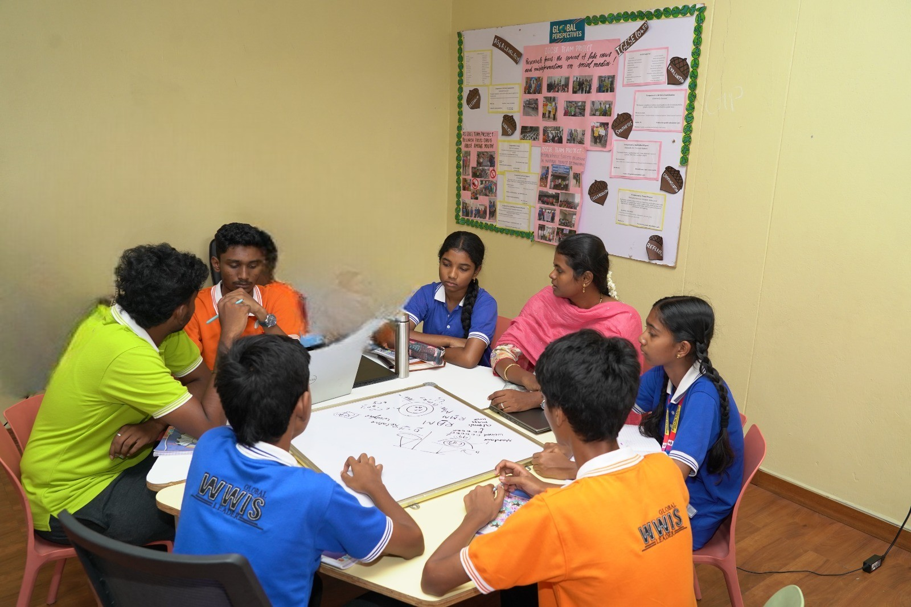
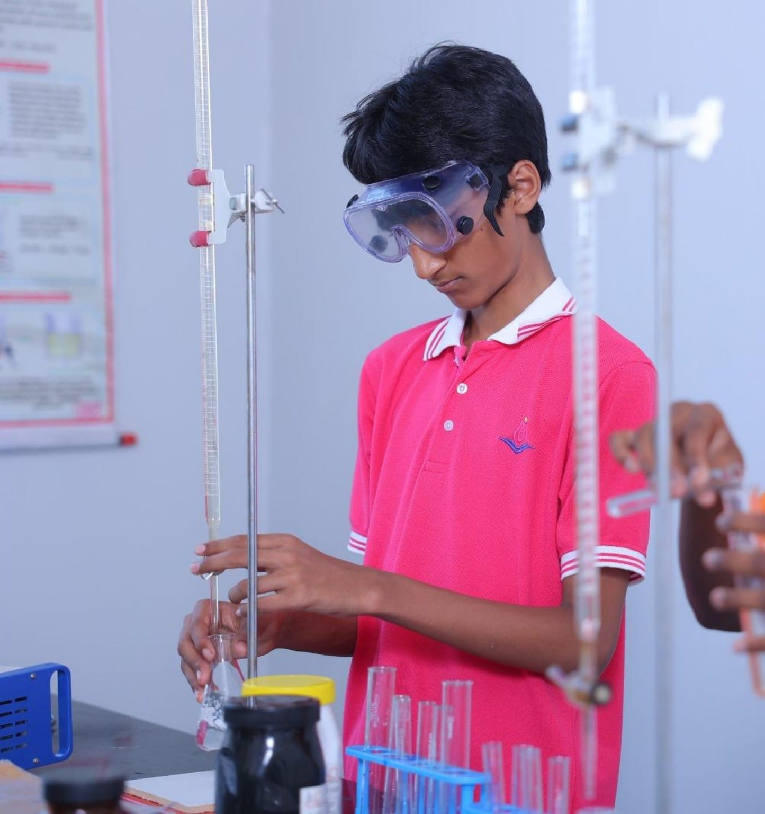
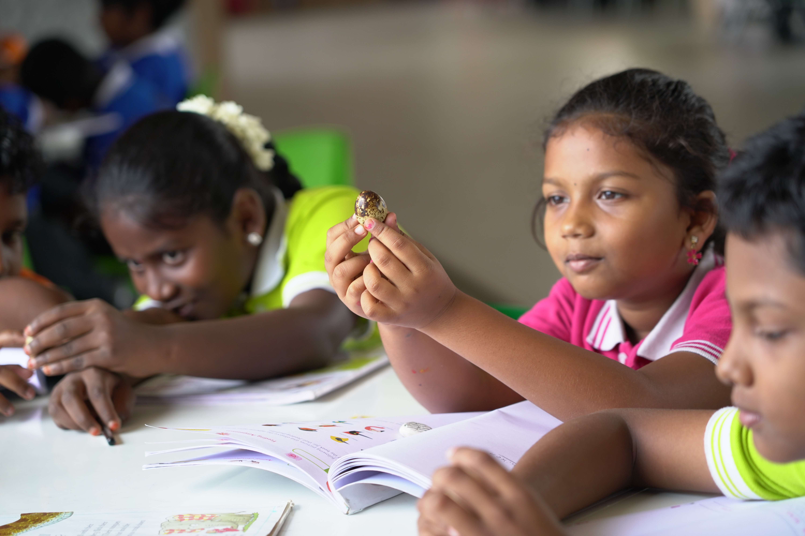
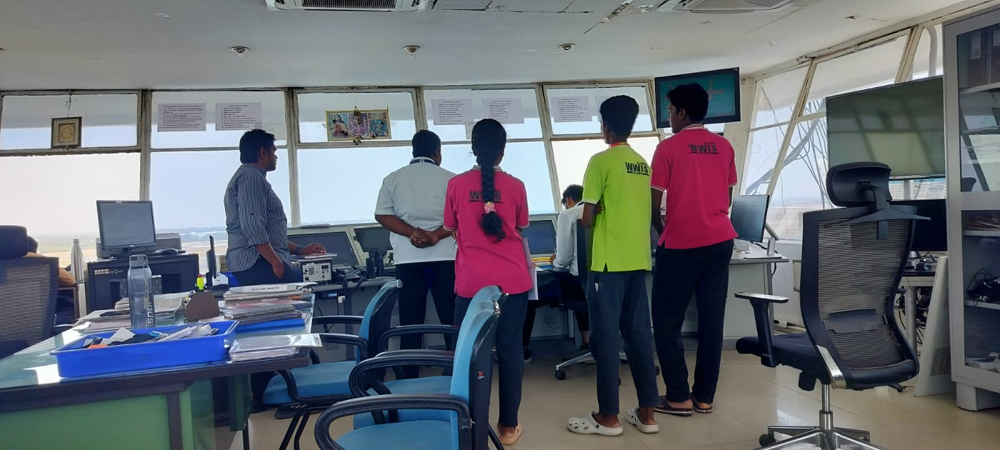
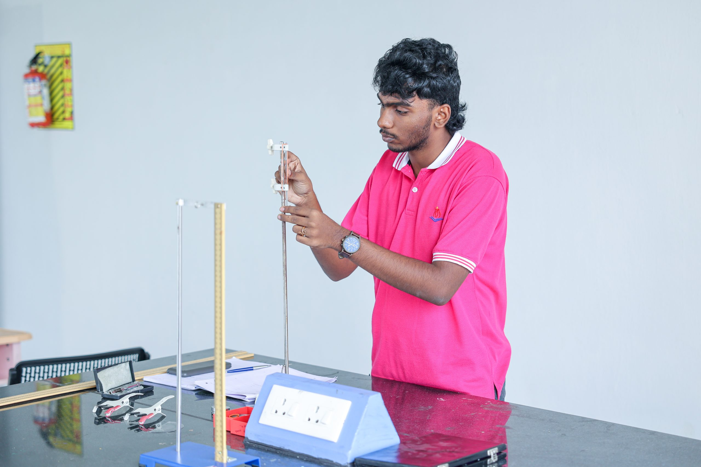
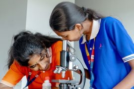

Academic excellence, skill development, and long-term career readiness.
iLead prepares learners for admission into prestigious universities through robust academics combined with practical experience — guiding students to identify their strengths and interests so they can make informed academic decisions.
Every learner has unique interests and strengths. Through iLead, students explore their abilities, make informed subject choices and build a clear direction for their future.
Explore personal interests, talents and abilities.
Make informed subject choices based on interests and future goals.
Receive guidance to shape a suitable learning and career pathway.
Develop useful skills, confidence and readiness for future opportunities.

To thrive in iLead, learners should have the following skills and qualities:

From Grade 8, learners explore over 45 Self-Learning Courses (SLCs) across different subject areas. These courses help them experience new challenges, discover their strengths, and identify subjects they enjoy.
This early exposure supports informed subject choices in Grade 9 based on their abilities and future career goals, helping them build subject knowledge for IGCSE, AS, and A-Level examinations.
Learners begin exploring their future pathways in Grade 8, where they are introduced to a diverse range of around 12 self-learning subjects, in addition to languages, helping them discover their interests, strengths, and potential career opportunities.
At the beginning of Grade 9, learners choose their subjects based on their individual career plans, with guidance from parents and ILP Coordinators. Subjects offered for exploration and selection include:
Throughout Grades 9 and 10, learners receive continuous assessments, regular feedback, and personalised support to identify and overcome learning difficulties. This helps them strengthen their understanding, build confidence, and prepare effectively for their IGCSE examinations.

Through IECP classes, learners explore career pathways in Grades 8 and 9 and develop roadmaps for their future goals.
In Grades 10, 11, and 12, learners prepare for entrance examinations for their preferred colleges and universities. They also build portfolios, complete projects, and develop professional skills related to their chosen careers.
Beyond Marks. Beyond Classrooms. Towards a Meaningful Future.
At WWIS, we believe education goes beyond academic achievement. It is about discovering interests, nurturing strengths, developing essential skills, and preparing learners for a meaningful future.
Through our Individual Learning Plan (ILP) and its Interest Exploration and Career Planning (IECP) sessions, learners explore career possibilities, gain practical experience, and make informed decisions about their future.
Career exploration begins as early as Grade 3. Through guided activities and personalised support from ILP coordinators, learners discover their interests, recognise their strengths, and explore different professional fields.
Before each session, ILP coordinators provide personalised guidance to help learners understand their abilities, explore their passions, and begin forming a vision for their future careers.
IECP connects learning with the professional world. Learners get opportunities to interact with experts, participate in internships and practical activities, develop essential skills, and build portfolios showcasing their achievements and experiences. Through these sessions, learners can:
Each experience helps learners understand themselves better and make informed decisions about their future.
Learners research career options, explore suitable colleges and courses, understand admission requirements and entrance examinations, and prepare presentations outlining their career pathways. They learn to set goals, plan their preparation, identify the skills they need to develop, and take responsibility for their future.
Teachers, ILP coordinators, and parents work together to guide learners, encourage their interests, and provide meaningful exposure to different careers.
Our academic team and ILP coordinators provide continuous guidance. Industry professionals and subject experts share their knowledge and experience. Parents also play an important role by encouraging their children's interests and helping them access relevant internships, professional interactions, and practical learning opportunities. This partnership ensures that every learner receives meaningful support aligned with their interests, strengths, college aspirations, and career goals.
While traditional education often emphasises academic performance and examination results, our iLead approach looks beyond marks. We help learners discover their individuality, develop real-world competencies, build confidence, and prepare for the professional challenges of tomorrow.
We want our learners to graduate with not only academic qualifications but also the skills, experiences, clarity, and confidence to stand out in their chosen fields.
At WWIS, we do not believe every learner should follow the same path. We believe every learner deserves the opportunity to discover a path that reflects their unique potential.
Through IECP and the Individual Learning Plan, we empower learners to explore, experience, plan, and prepare for their future with purpose. Our vision is not merely to help children score marks, but to help them discover who they are, understand what they can become, and build the future they aspire to achieve.
WWIS iLEAD — Beyond Marks. Towards Purpose. Preparing Learners for Life.

Cambridge IGCSE (Grade 10), AS Level (Grade 11), and A Level (Grade 12) are internationally recognised qualifications from Cambridge International Education, UK.
These qualifications support applications to colleges and universities in India and many other countries, subject to each institution's admission requirements. Cambridge's English-based learning also strengthens speaking, reading, and writing skills and supports preparation for IELTS.

Starting in Grade 6, learners participate in Saturday internships, working with experts to gain real-world experience.
They develop practical skills, explore their interests, and learn to solve real-world problems.
Explore our detailed 6+ career pathways to discover different career options, understand the skills they require, and help students plan their future based on their interests and aspirations.